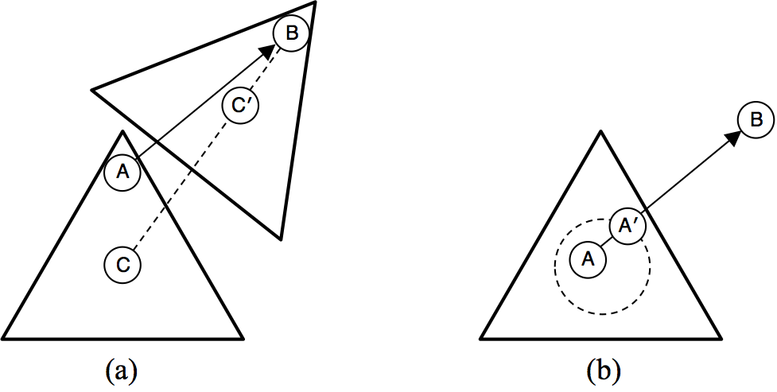

rotodrag-js
A JavaScript library for one-finger SVG dragging and rotation
Have you ever wanted to manipulate both the location and orientation of an SVG object at the same time? Using only one finger or just your mouse?
rotodrag-js is a solution. It lets you drag SVG objects contained inside a parent SVG as if they were physical objects on a sheet of ice, such that they rotate around their center of mass as they are pulled one way or another.
This is exactly what you might want if you are building a web application for doing jigsaw puzzles, or for placing drawings from Greek mythology on top of their constellations in a picture of a starry sky, or for making animated movies about the lives of triangles and circles.
Example: Jigsaw puzzle
How does it work?
rotodrag-js provides a 1-pointer solution for simultaneous rotation and translation using two principles: the "sticky finger" and the "slippery center". Drigging is initiated on mouse-down or touch-start browser event handlers attached to each draggable SVG element. As the user subsequently drags their mouse or finger, the position of the SVG object is updated such that the pointer's location on the object is the same as when the drag was initiated (the "sticky finger"), and the new conter point of the object lies on the line segment between its previous location and the new location of the pointer, as in the figure below (a).
By updating the SVG position at the rate of incoming pointer events, this approach yeilds fluid and intuitive manipulation of each draggable object in most cases. However, if the dragging is initiated near the center point of the object, small and unctrollable movements of the pointer will tend to induce large, sporadic rotations. rotodrag-js implements a simple solution to this problem, which is to suppress the initation of dragging until the pointer has bee dragged sufficiently far away from the center point of an object (the "slippery center"), as in the figure above (b). The latency in an object's movement is largely imperceptible, and the ffect is that every attempt to drag an object affords a degree of expressive controll.
How do I use it on my website?
You need to have a good understanding of the XML specification of SVG to use rotodrag-js, as you will have to edit the raw code of your SVG file to get things to work. The basic steps are as follows:
- Add the
rotodrag.jsfile to your header:
<script src="rotodrag.js"></script>
- Embed the code for your SVG image directly into the body of your webpage. Add a class to this SVG element "draggables" to indicate that this SVG has objects inside it that you'd like to make draggable.:
<svg class="draggables" xmlns="http://www.w3.org/2000/svg"> ... </svg>
- Position an object that you'd like to make draggable so that it's center point is located at 0,0 on the SVG. If you are importing complex SVG code from some SVG editor, you can wrap your complex object in a
<g>element and use the "transform" property to position your object just right.
<g transform="translate(-69.25,-170.43)"> <path ... some complex path here ... /> </g> - Finally, wrap this object in another <g> element, with a reverse transform attribute to position the object back to its starting location, a class of "draggable", and optional "data-dragstyle" and "data-slip-radius" attributes to enable and customize the size of the slippery center.
<g class="draggable" transform="translate(69.25,170.43)" data-dragstyle="slippery" data-slip-radius="20"> <g transform="translate(-69.25,-170.43)"> <path ... some complex path here ... /> </g> </g>
If all goes well, the auto-start functionality of rotodrag-js should kick in when you load your HTML page, and you should be able to drag an object around its containing SVG using your mouse or your finger. If you have trouble, see example embedded in the source code of this page.
Contributing
rotodrag-js was originally written by Andrew S. Gordon at the University of Southern California to support data-collection websites related to the automated interpretation of the famous "Heider-Simmel Film". These projects required a capacity for one-finger dragging and rotation of SVG objects, and none of the existing SVG or drag-and-drop libraries implemented the desired behavior. The code was made open-source to help others with the same needs.
rotodrag-js breaks frequently as browser vendors add and drop functionality from the desktop and mobile browsers, e.g. Chrome inexplicably dropped the javascript function "getTransformToElement" in late 2017, requiring the addition of a polyfill. Touch-action scrolling in Android Chrome was fixed in early 2021 by setting "style.touchAction" to "none". To keep things working smoothly in the face of constant change, rotodrag-js requires contributions from people like you.
GitHub Repository: https://github.com/asgordon/rotodrag-js